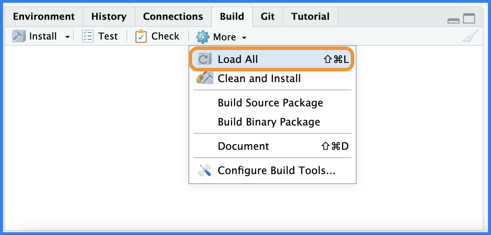

install.packages("devtools")
library(devtools)Creating packages
“Can the .Rproj file convert an R project into an R package?”
The technical answer is no, because the .Rproj only activates the Build pane in the IDE. The tools in the Build pane are directly connected to the devtools package (hence the PackageUseDevtools: Yes in the .Rproj file).
However, if we install devtools and try to load the code in the R/ folder with Build > Load All (we’ll cover devtools more in the next chapter):

R/ folderBased on the quotes and error message above, we can be confident the difference between an R Project and R Package has something to do with the DESCRIPTION file. As we’ve seen, changing the Project build tools to Package will add the package development fields in the .Rproj file and trigger the Build pane, but this doesn’t change anything in the DESCRIPTION:

DESCRIPTIONDESCRIPTION file after changing projApp.RprojThe image above demonstrates why setting the Project build tools in your Project Options is insufficient to convert a project into a package. The directory must include a DESCRIPTION file containing the mandatory fields listed above to be a functional R package.
Read more about DESCRIPTION file fields in R Packages, 2ed
:::
After copying the contents of the DESCRIPTION file above to projApp, I still need the IDE to re-read the .Rproj file. I can do this by terminating the session (Session > Terminate R… > Yes)


GitHub [
projApp]:[05-convert-manual]
The code for this section was pushed to the [05-convert-manual] branch of the [projApp] repo.
git add .
git commit -m 'git message'
git push Remember: .Rproj != DESCRIPTION
It’s important to remember there is no direct connection between the .Rproj and DESCRIPTION files.
For example, I could remove the Package setting from Project build tools in Project Options and still run devtools::load_all() in projApp (without triggering the Build pane):

DESCRIPTION)This practice isn’t something I’d recommend because the IDE build tools make development so much easier, but it demonstrates the distinction between what the .Rproj fields and DESCRIPTION fields control.
The callout blocks below represent scenarios I’ve encountered requiring an app-package:
Convert existing shiny project .Rproj
The shiny app project from the previous chapter is stored in the 03_projApp branch of the projApp repo. Feel free to download the code and follow along!
projApp
The files in projApp are below:
projApp/
├── DESCRIPTION
├── R/
│ ├── mod_scatter_display.R
│ ├── mod_var_input.R
│ └── utils.R
├── README.md
├── app.R
├── movies.RData
├── projApp.Rproj
├── rsconnect/
└── www/
└── shiny.png
4 directories, 9 filesapp.Rcontains themovies_app()function, which will run the application.The
R/folder contains the module function files (mod_var_input.Randmod_scatter_display.R) and thescatter_plot()utility function(in theutils.Rfile).- The contents of the
R/folder are automatically loaded when the app is run.
- The contents of the
projAppshiny project also hasDESCRIPTIONandREADME.mdfiles for metadata and documentation.The data for the application (
movies.RData) is imported with a call tobase::load().projApp.Rprojis the Project file we created in the previous chapter.wwwholds an imageshiny.pngwhich is referenced directly in the UI.rsconnect/is the folder containing files for deploying the app to shinyapps.io.
View a deployed version here.
Calling create_package() with the arguments covered above in the root directory of your shiny app project will trigger a series of messages and prompts.
The first tells us the ‘active project’ is being set to the folder our app-package is located in:
✔ Setting active project to '/Users/mjfrigaard/projects/apps/projApp'Package DESCRIPTION
The second message is a prompt regarding the new DESCRIPTION file:
✔ Setting active project to '/Users/mjfrigaard/projects/apps/projApp'
Overwrite pre-existing file 'DESCRIPTION'?After confirming, the contents of the new DESCRIPTION file are printed to the Console. The fields below are the ones we passed to use_description():
✔ Writing 'DESCRIPTION'
Package: projApp
Title: movies app
Version: 0.0.0.9000
Author: John Smith <John.Smith@email.io> [aut, cre]
Maintainer: John Smith <John.Smith@email.io>
Description: A movie-review shiny application.
License: GPL-3The three fields below are the result of the roxygen2 = TRUE argument:
Encoding: UTF-8
Roxygen: list(markdown = TRUE)
RoxygenNote: 7.2.3(roxygen2 is covered in a later chapter).
Package NAMESPACE
✔ Writing 'NAMESPACE'Package Rproj file
Overwrite pre-existing file 'projApp.Rproj'?✔ Writing 'projApp.Rproj'✔ Adding '^projApp\\.Rproj$' to '.Rbuildignore'
✔ Adding '^\\.Rproj\\.user$' to '.Rbuildignore'✔ Setting active project to '<no active project>'Overwrite pre-existing file 'DESCRIPTION'?
1: No
2: Not now
3: I agree
Selection: 3
✔ Writing 'DESCRIPTION'The contents of the new DESCRIPTION is below:
Package: projApp
Title: movies app
Version: 0.0.0.9000
Author: John Smith <John.Smith@email.io> [aut, cre]
Maintainer: John Smith <John.Smith@email.io>
Description: A movie-review shiny application.
License: GPL-3
Encoding: UTF-8
Roxygen: list(markdown = TRUE)
RoxygenNote: 7.2.3The new fields are covered in detail below, or you can read about them in the DESCRIPTION chapter of the R Packages, 2ed
NAMESPACE
A new NAMESPACE is created (although it’s empty). This
✔ Writing 'NAMESPACE'This file will help manage the dependencies in our app-package.
# Generated by roxygen2: do not edit by handprojApp.Rproj
Overwrite pre-existing file 'projApp.Rproj'?
1: Negative
2: No way
3: Yup
Selection: 3
✔ Writing 'projApp.Rproj'Below is the current contents in the projApp.Rproj file (you can view these by opening projApp.Rproj with a text editor).
Version: 1.0
RestoreWorkspace: Default
SaveWorkspace: Default
AlwaysSaveHistory: Default
EnableCodeIndexing: Yes
UseSpacesForTab: Yes
NumSpacesForTab: 2
Encoding: UTF-8
RnwWeave: Sweave
LaTeX: XeLaTeXVersion: 1.0
RestoreWorkspace: No
SaveWorkspace: No
AlwaysSaveHistory: Default
EnableCodeIndexing: Yes
Encoding: UTF-8
AutoAppendNewline: Yes
StripTrailingWhitespace: Yes
LineEndingConversion: Posix
BuildType: Package
PackageUseDevtools: Yes
PackageInstallArgs: --no-multiarch --with-keep.source
PackageRoxygenize: rd,collate,namespace.Rbuildignore
✔ Adding '^projApp\\.Rproj$' to '.Rbuildignore'
✔ Adding '^\\.Rproj\\.user$' to '.Rbuildignore'✔ Setting active project to '<no active project>'New project 'projApp' is nested inside an existing project './', which is rarely a good idea.
If this is unexpected, the here package has a function, `here::dr_here()` that reveals why './' is regarded as a project.Nesting projects is not a good idea because of the contents of the .Rpeoj file.
If you disregard this warning, the following package development fields are added to the .Rproj file:
Version: 1.0
RestoreWorkspace: No
SaveWorkspace: No
AlwaysSaveHistory: Default
EnableCodeIndexing: Yes
UseSpacesForTab: Yes
NumSpacesForTab: 2
Encoding: UTF-8
RnwWeave: Sweave
LaTeX: XeLaTeX
AutoAppendNewline: Yes
StripTrailingWhitespace: Yes
LineEndingConversion: Posix
BuildType: Package
PackageUseDevtools: Yes
PackageInstallArgs: --no-multiarch --with-keep.source
PackageRoxygenize: rd,collate,namespaceThe active project is set to the same working directory as
projApp:✔ Setting active project to 'path/to/projApp'Instead of automatically writing a
DESCRIPTIONfile, we’re asked if the contents of the existing file can be overwritten, which is usually a good idea because of the specific fields required in packages (I’ll cover theDESCRIPTIONbelow).Overwrite pre-existing file 'DESCRIPTION'? 1: Negative 2: No 3: I agree Selection: 3The contents of the
DESCRIPTIONfile are displayed in the Console:✔ Writing 'DESCRIPTION' Package: projApp Title: What the Package Does (One Line, Title Case) Version: 0.0.0.9000 Authors@R (parsed): * First Last <first.last@example.com> [aut, cre] (YOUR-ORCID-ID) Description: What the package does (one paragraph). License: `use_mit_license()`, `use_gpl3_license()` or friends to pick a license Encoding: UTF-8 Roxygen: list(markdown = TRUE) RoxygenNote: 7.2.3- The new
DESCRIPTIONis created withusethis::use_description(), and you can manually set each field increate_package().
- The new
The
NAMESPACEfile is created:✔ Writing 'NAMESPACE'- The
NAMESPACEcontrols what packages and functions are imported and exported fromprojApp(I’ll cover theNAMESPACEfile more in future sections).
- The
Choose whether or not to overwrite the existing
.Rprojfile (if not, there will be two.Rprojfiles in the same folder).Overwrite pre-existing file 'projApp.Rproj'? 1: Not now 2: I agree 3: Nope Selection: 2If yes, the new
projApp.Rprojis created:✔ Writing 'projApp.Rproj'The
projApp.Rprojis added to the.Rbuildignore✔ Adding '^projApp\\.Rproj$' to '.Rbuildignore'A new session is opened from
Path/to/projApp/projApp.Rproj✔ Opening 'Path/to/projApp/' in new RStudio session
When the new session starts, the projApp app-package has the following contents:
projApp/
├── DESCRIPTION
├── NAMESPACE
├── R/
│ ├── mod_scatter_display.R
│ ├── mod_var_input.R
│ └── utils.R
├── README.md
├── app.R
├── movies.RData
├── projApp.Rproj
├── rsconnect/
└── www/
└── shiny.png
6 directories, 11 filesFortunately, projApp already has some ‘pre-package practices,’ such as:
The module
.Rfiles are stored in theR/folderREADME.mdfile existsThe dependencies can be managed in
NAMESPACEandDESCRIPTIONfiles
projApp still needs the following items addressed to become a fully functional shiny app-package:
Install and load the
devtoolspackageConfirm the code in
projAppcan be loaded (sourced) and documentedEnsure
movies.RDataandshiny.pngare loaded with the package
Using create_package() to convert a shiny app project into a shiny app-package isn’t seamless, but it gets us ~50% there. We should still consult R Packages, specifically the chapters on managing dependencies, NAMESPACE workflow and documenting code.
GitHub [
projApp]:[04-convert-usethis]
The code for this section was pushed to the [04-convert-usethis] branch of the [projApp] repo.
git add .
git commit -m 'git message'
git push Manual conversion
GitHub [
projApp]:[05-convert-manual]
The code for this section can be found in the [05-convert-manual] branch of the [projApp] repo.
The 05-convert-manual branch was created by entering the following commands in the Terminal (from the 03-projApp branch):
# switch back to 03-projApp
git checkout 03-projApp
# create new branch
git checkout -B 05-convert-manual
git push -u origin 05-convert-manualIt’s also possible to manually convert the contents of projApp into an app-package. But to do this, we should cover what happens in the Rproj file when a project becomes a package.
When projApp was initially created as a new shiny app project with the New Project Wizard, the RStudio project file (projApp.Rproj) was automatically added to the root directory.
projApp/
├── app.R
└── projApp.Rproj <- RStudio project file!
1 directory, 2 filesWhen clicked on, the Rproj file will open RStudio and set the current working directory to its location.
RStudio project files
You can read more about the benefits of using RStudio projects to configuring project-level options here.
–>